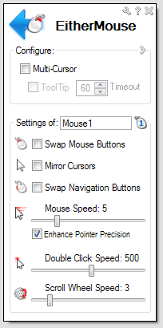
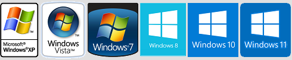

EitherMouse Setup.exe
EitherMouse.exe
EitherMouse.zip
|
EitherMouse
Multiple mice, individual settings...
- Instantly changes settings when any mouse is used:
- swap buttons
- mirror cursor
- adjust speeds
- and more...
- Leave multiple mice on a pc and automatically swap buttons on each mouse.
- Have a left-handed and a right-handed mouse always connected and ready to use.
- Match speeds across different mice, ie touchpad and mouse with different speeds.
- Accommodate left-handed and right handed users easily on multi-user or public workstations.
- Helps prevent RSI/injury issues by allowing seemless switching between hands.
- Quickly change mouse settings from system tray if only one mouse is used.
- Freeware! no ads, no nags, free software, suggestions appreciated!
- 100% virus, malware, and spyware free for over 10 years! Despite many false positives...
- Tested on: Windows 10, 8.1, 8, 7, Vista, and XP, feedback welcome!

|